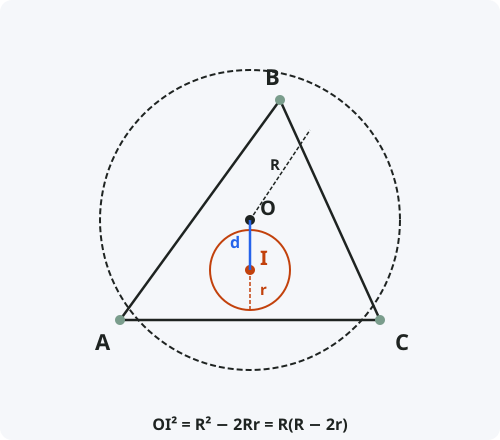

Теорема Эйлера (для треугольника)
Формулировка
Квадрат расстояния между центрами вписанной и описанной окружностей треугольника равен R(R − 2r), где R — радиус описанной окружности, r — радиус вписанной окружности.
Обозначения
Пусть дан треугольник ABC.
O — центр описанной окружности.
I — центр вписанной окружности (инцентр).
R — радиус описанной окружности.
r — радиус вписанной окружности.
d = OI — расстояние между центрами.
Тогда: d² = R(R − 2r) или OI² = R² − 2Rr

Доказательство
Более строгое доказательство использует инверсию или теорему Птолемея.
Альтернативное доказательство (через степень точки)
Теорема доказана.
Следствия из теоремы
- Неравенство Эйлера: из d² ≥ 0 следует R ≥ 2r. Равенство достигается только для равностороннего треугольника.
- В любом треугольнике радиус описанной окружности не менее удвоенного радиуса вписанной окружности.
- Для равностороннего треугольника d = 0, центры совпадают, R = 2r.
- Для прямоугольного треугольника с катетами a, b и гипотенузой c: R = c/2, r = (a + b − c)/2, d = R − r.
- Зная R и r, можно оценить форму треугольника: чем ближе d к 0, тем треугольник ближе к равностороннему.
Примеры применения
Пример 1. В треугольнике R = 10, r = 4. Найдите расстояние между центрами.
Решение: d² = 10(10 − 8) = 10·2 = 20 ⇒ d = √20 = 2√5 ≈ 4,47.
Пример 2. Проверьте, может ли существовать треугольник с R = 5 и r = 3.
Решение: По неравенству Эйлера должно быть R ≥ 2r. Здесь 5 ≥ 6 — неверно. Такой треугольник не существует.
Пример 3. В равностороннем треугольнике R = 6. Найдите r и d.
Решение: Для равностороннего: R = 2r ⇒ r = 3. Центры совпадают ⇒ d = 0.
Историческая справка
Теорема названа в честь великого швейцарского математика Леонарда Эйлера (1707–1783), который опубликовал её в 1765 году в работе «Solutio facilis problematum quorundam geometricorum difficillimorum».
Эйлер впервые установил связь между радиусами вписанной и описанной окружностей и расстоянием между их центрами. Это одно из самых элегантных соотношений в геометрии треугольника.
Неравенство R ≥ 2r, вытекающее из этой теоремы, также носит имя Эйлера и считается одним из фундаментальных неравенств в геометрии.
Интересные факты
- Теорема Эйлера справедлива не только для треугольника, но и для любого вписанно-описанного многоугольника.
- Существует обобщение теоремы Эйлера для вневписанных окружностей: OIₐ² = R² + 2Rrₐ.
- Теорема Эйлера является частным случаем теоремы Понселе о поризме для треугольников.
- С помощью теоремы Эйлера можно доказать, что среди всех треугольников с заданными R и r равносторонний имеет максимальную площадь.
- В 2007 году было найдено элементарное доказательство теоремы Эйлера, доступное даже школьникам.